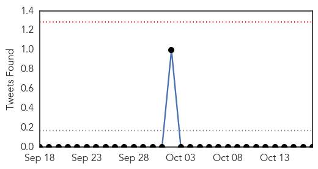
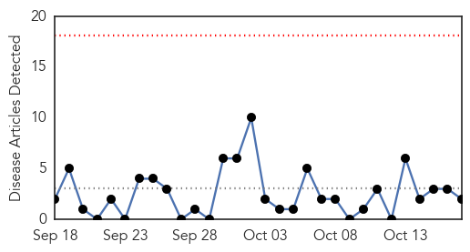

Cholera
30-Day Web Trend
0 alerts, 0 warnings

30-Day Twitter Trend
0 alerts, 0 warnings

Article Locations

Article Confidences

Top Articles:
- 0.996
- Ebola and cholera in focus
- 0.987
- Panic over Ebola echoes the 19th-century panic over cholera
- 0.962
- Company donates ORS to ministry
- 0.959
- Outbreak On Trial: Who’s To Blame For Bringing Disease Into A Country?
- 0.913
- Cholera Epidemic in Ghana: 22,000 Infected
- 0.797
- Cholera outbreak looms in Harare, party
- 0.761
- Salesian Missions and SoapBox Soaps Partnership Puts Soap into the Hands of Youth and Families at Risk for Cholera - Haiti
- 0.716
- Ghana, Business Advice, Jobs, News, Business Directory, Real Estate, Finance, Forms, Auto
- 0.641
- Cholera outbreak looms in Harare
- 0.633
- UN envoy calls for funding backed by government action, peace successes in troubled Sahel
- 0.625
- UN envoy calls for funding backed by government action, peace successes in troubled Sahel
- 0.618
- UN envoy calls for funding backed by government action, peace successes in troubled Sahel - Mali
- 0.614
- UN envoy calls for funding backed by government action, peace successes in troubled Sahel
- 0.592
- Bukom Banku Is Ambassador Against Cholera
- 0.545
- District Court in New York to hear arguments on UN claim to immunity from justice over cholera in Haiti
Top Tweets:
-
No tweets found for Oct 17, 2014
MERS
30-Day Web Trend
0 alerts, 0 warnings

30-Day Twitter Trend
8 alerts, 0 warnings

Article Locations

Article Confidences

Top Articles:
Top Tweets:
- 0.714
- RT: MOH reminds people to use best health practices to avoid MERS-CoV http://t.co/qE4quWIlSh @WHO MERS وزارة_الصحة
- 0.635
- RT: CID: An observational, laboratory-based study of outbreaks of MERS-Coronavirus in Jeddah and Riyadh… Read more at http:/…